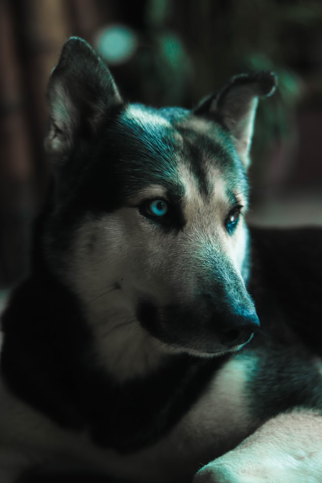
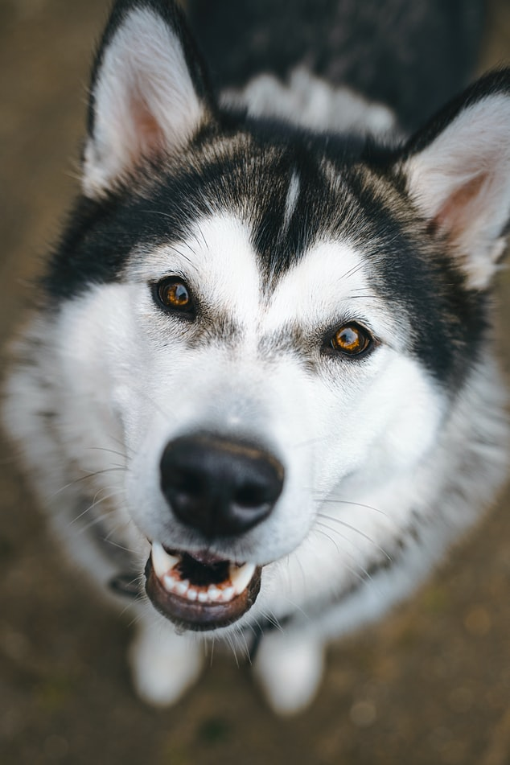
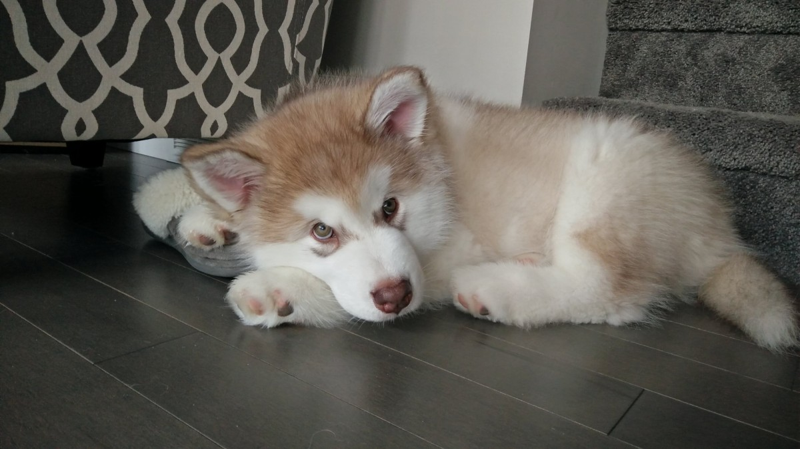
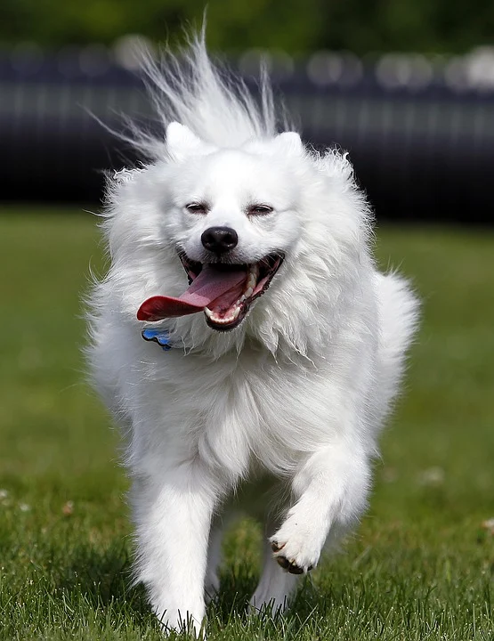
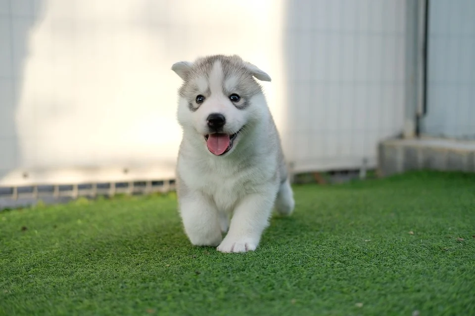
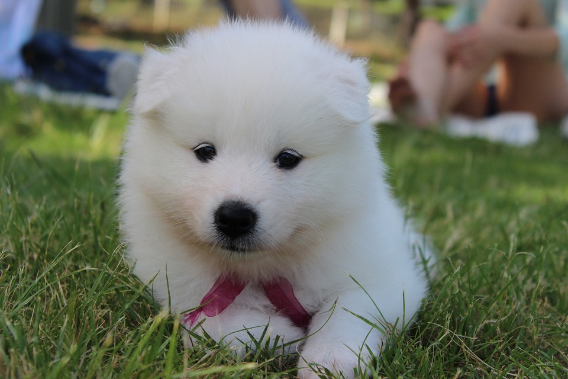
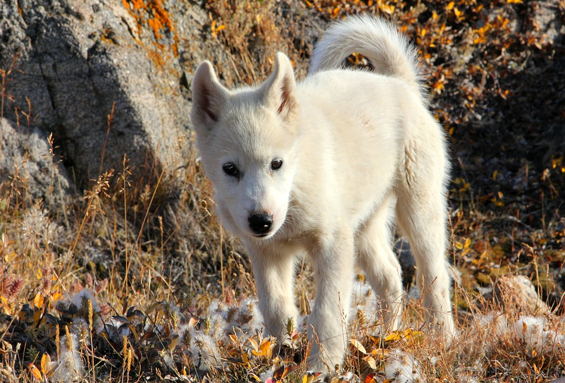
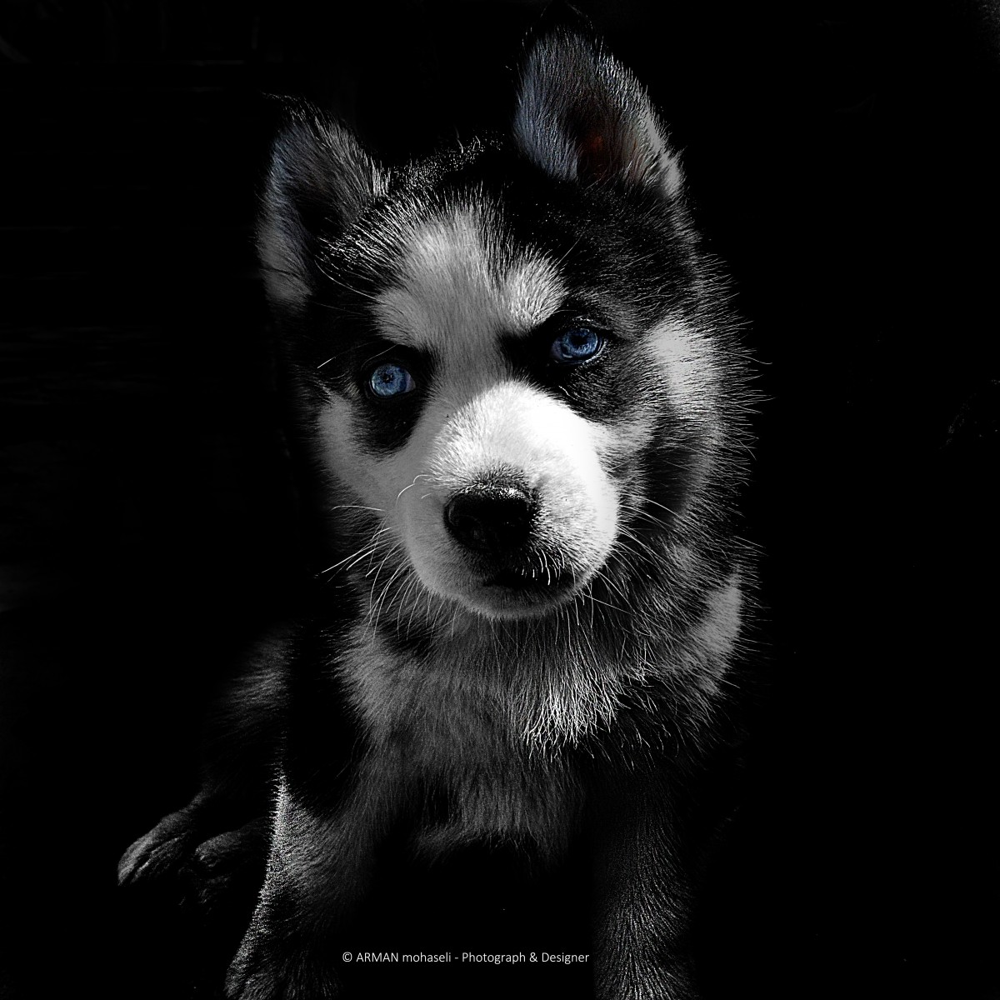

All Alaskan dog breeds are considered a working class dog. While some breeds were bred for carrying items or pulling sleds, others were bred for herding, guarding, and companionship. All of the following breeds are very intelligent, extremely trainable, and highly energetic. To reach their full potential, we recommend an experienced dog owner who enjoys spending time outdoors and doesn't require to leave their pet alone for long periods of time. While some breeds have similar working qualities each breed has it's own distinct behaviors and mannerisms it excels at as well as looks and size.
Quick links to your favorite breed
Alaskan Husky
Is not a pure bred dog and is a mix of various Northern breeds.
Medium in size.
Weights up to 60lbs.
Heights up to 23.5 inches.
Looks will vary due to not being purebred.
Medium coat length with a heavy undercoat.
Can run fast up and has been recorded up to 28mp.
Needs lots of exercise.
Calm temperament and good with children and strangers.
Needs interaction with owner and other dogs.
Prefers cool climates.
Alaskan Malamute
Males weight around 85lbs about 25inches tall.
Females weight about 75 lbs and 23inches tall.
Males can get up to 100lbs.
Don't bark much but do howl.
Needs interaction with owners.
High energy.
Loves to dig.
Prefers colder climates due to a double fur coat.
Good with children.
Alaskan Klee Kai
Males weight is around 12-20bls.
Female weight is around 10-18lbs.
Heights range from 13-17 inches.
Life expectancy of 15-20 years.
High social needs, lots of interaction with their owners.
Tolerates other dogs well.
Do not do well if left alone for long periods.
American Eskimo
Very agile but were never bred to be sled dogs.
Eskimos had nothing to do with the breed as they originated in Germany.
First dog ever known to walk a tight rope.
Usually completely white fur but occasionally come in a biscuit color.
Very intelligent and playful.
Comes in three sizes toy, miniature, and standard.
Toy heights range from 9-12 inches, weights up to 10lbs.
Miniature heights range 12-15 inches, weights up to 20lbs.
Standard heights range 15-19 inches, weights up to 35lbs.
High energy and needs interaction with owner.
Siberian Husky
Life expectancy of 12-15 years.
Heights range from 20-23 inches.
weights range from 35-60lbs.
Doesn't shed much other than twice a year.
Love to run and are superior sled dogs.
Thick double coat.
Very friendly with strangers and are not good guard dogs.
Don't fatigue easily and can run many miles on little food.
Are very free spirited and need to be watched closely and will try to run away.
Not recommended for a novice dog owner.
Rarely can bark but do howl as they are very talkative.
Originated from Siberia.
Samoyed
Life expectancy from 12-14 years.
Heights range from 19-24 inches.
weights range from 50-60lbs.
Sheds frequently.
Is an active bred that needs lots of exercise.
temperaments can vary and early socialization is recommended.
Very loyal and alert.
Makes a good watchdog.
Prefers cool climates.
Has a moderate tendency to bark or howl.
Greenland
Males heights range from 23-27 inches and weights up to 75 lbs.
Females heights range from 20-24 inches and weights up to 65lbs.
Muscular dogs bred as a sled dog.
They are a rare breed.
Coat length is medium to long.
Highly intelligent and need a strong willed owner.
Highly devoted to one person for life although still friendly with other people.
Good guard dogs and will protect their owner.
Very active and need regular exercise.
Seppala Siberian Sled dog
Life expectancy is 12-16 years.
Heights range from 22-23inches and weights 40-50lbs.
Bred as a sled dog.
Used to be same breed as the Siberian Husky but differed in appearance.
Seppala's are the working line while Siberian Husky's are the show line.
Highly energetic dog that needs lots of exercise.
Prefers cooler climates.
Are very free spirited and need to be watched closely and will try to run away.
Like the Siberian Husky they shed twice a year.
Don't fatigue easily and can run many miles on little food.
Has a medium length coat.
Not recommended for a novice dog owner.